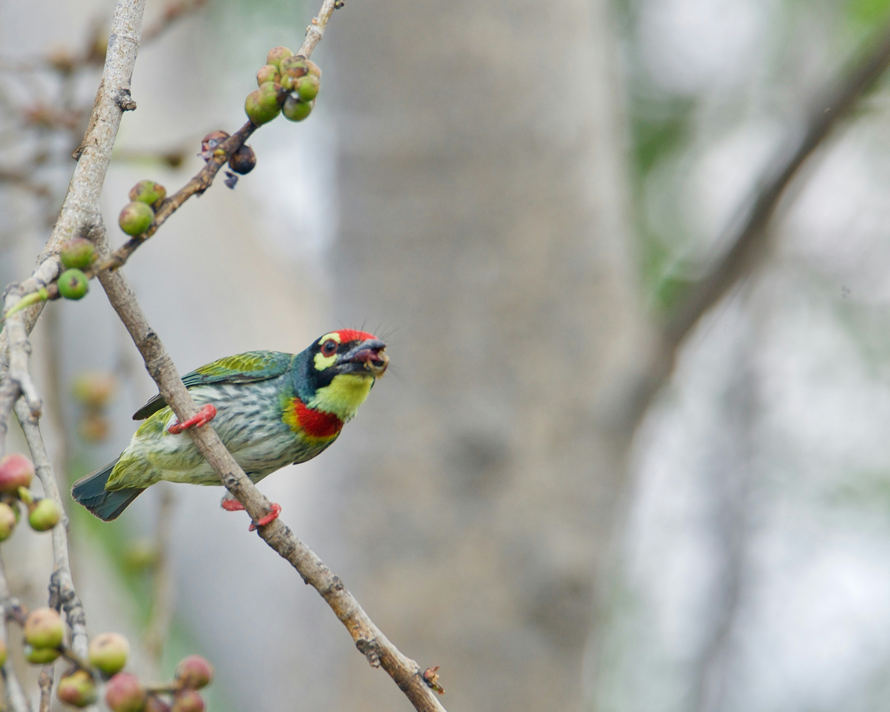

The Coppersmith Barbet is a small, colourful green barbet with a red forehead, red throat, and yellow-and-blue facial markings. Its name comes from its repetitive call, which resembles the ringing sound of a coppersmith striking metal. It feeds mainly on fruits and berries and is commonly found in gardens, orchards, wooded parks, and areas with mature fruiting trees.